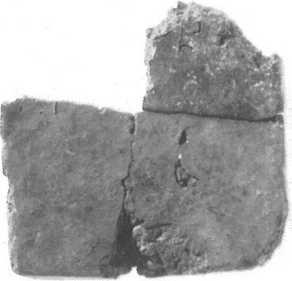
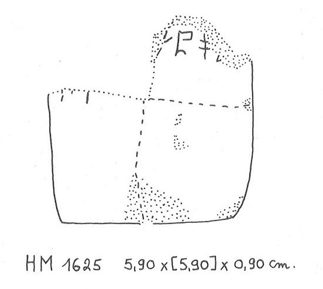

-
ZA13
Names
ZA13, ZA 13
Support
Stone vessel
Location
Zakros
Findspot
Unavailable


Scribe
ZA Scribe 3
Context
Unavailable
Dimensions
[5.90]
5.90
0.90
cm
GORILA OCR
Catalogue
HM 1625
Hiraklion Museum
Readings
1 1 0 SU none
1 1 0 PA none
𐘲𐘂
SUPA
𐘲𐘂
SUPA
ZA 13
, page tablet (HM 1625) (GORILA III: 178-179),
provenience
unknown
ZA Scribe 3?
|
side.line
|
statement
|
logogram
|
number
|
fraction
|
|
|
supra mutila
|
|
|
|
|
.1
|
]-SU-PA-[
|
|
|
|
|
.2
|
]
vest.
[
|
|
|
|
|
.3-5
|
vacant
|
|
|
|
.1 or: ]
KU
-SU-PA[
Commentary © John Younger
References
papers/GORILA-Vol3.pdf#page=202